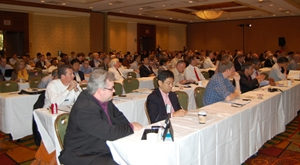
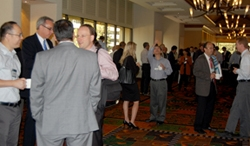
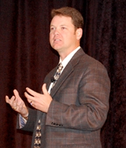
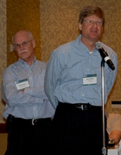
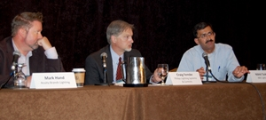
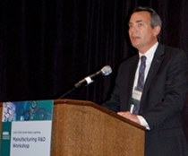
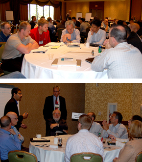
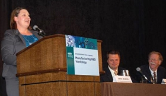
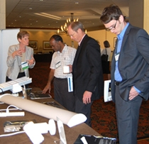

Two hundred lighting industry leaders from across the country, representing every link in the supply chain—from chip makers, to luminaire manufacturers, to material and equipment suppliers, to packagers, to luminaire testers, to the makers of testing equipment—gathered in San Jose, CA, June 13–14, 2012, to share insights, ideas, and updates at the fourth annual Solid-State Lighting (SSL) Manufacturing R&D Workshop, hosted by DOE. The workshop is a key component of an initiative launched by DOE in 2009 to enhance the quality and lower the cost of SSL products through improvements in manufacturing equipment and processes, and to foster a significant manufacturing role in the U.S. This year in San Jose, attendees explored a wide range of related topics and focused on reexamining and updating the DOE Manufacturing R&D Roadmap.
DOE SSL Portfolio Manager James Brodrick kicked off Day 1 by emphasizing that collaboration and a common framework of priorities are essential to moving solid-state lighting forward. "Cost reductions are key and don't happen easily or automatically," he said. "We need to rethink the way things are done." Observing that we have a window of opportunity to establish a U.S. role in SSL manufacturing, Brodrick raised the question of what role makes the most sense. He noted that DOE's SSL manufacturing R&D initiative aims to encourage a U.S. role in SSL manufacturing, as well as to accelerate cost reductions and improve product quality through equipment and process improvements.
Christopher Ruud of Cree, Inc., followed with a talk about creating a globally competitive manufacturing environment in the U.S. He illustrated this with examples from Ruud Lighting, the division of Cree that he heads, which was acquired by Cree in August 2011 and continues to manufacture domestically. Ruud noted that LEDs are still in the process of evolving, so manufacturers have to be ready for shorter product life-cycles. He reviewed some of the advantages of manufacturing domestically, including being closer to the U.S. market, cutting down on lead time, and avoiding being stuck with unsalable products that are shipped in from overseas in large quantities and become superseded before they sell out. Ruud said it's a myth that products can't be manufactured here, noting that highly automated manufacturing negates the advantage of low overseas labor rates.
Next, Vrinda Bhandarkar of Strategies Unlimited provided a look at global manufacturing trends in lighting. Citing DOE's 2010 U.S. Lighting Market Characterization report, she noted that of the country's 8.2 billion lamps, roughly 45 percent are incandescent, 29 percent linear fluorescent, and 19 percent CFLs—with just 1.4 percent falling into a catch-all category that includes LEDs. Reviewing trends in LED packaging, Bhandarkar observed that the LED count is dropping fast, with prices dropping even faster, and that there's major growth in the use of low- and mid-power LEDs for ambient lighting applications. She said that LED lighting was a $9.9 billion industry in 2011—with replacement lamps accounting for 23 percent, commercial/industrial 22 percent, and architectural 16 percent—but that revenue is expected to increase steadily to about $22 billion in 2016.
Rethinking the Manufacturing Process
A panel moderated by Morgan Pattison of SSLS, Inc., focused on rethinking SSL luminaire manufacturing. Mark Hand of Acuity Brands Lighting noted that the goal of reducing manufacturing costs is complicated by new testing requirements. He acknowledged that the industry has changed a great deal in the past few years, that regulatory testing alone is no longer sufficient, and that validation testing is needed to ensure quality and reliability. But Hand said that having so many testing requirements—caused in part by the explosion in LED lighting product codes – requires a great deal of time and money from manufacturers, and some of that testing may be redundant. Hand expressed a hope that the DOE SSL program could help to coordinate and streamline the various testing requirements so as to reduce the burden.
Craig Fenske of Philips Lighting Systems & Controls offered his company's perspective on manufacturing the L Prize®-winning LED replacement for the 60W incandescent bulb. He described how the prize-winning lamp, which went into production in the first quarter of 2012, is assembled in the U.S. by a strategic partner. Fenske compared the manufacturing of traditional glass lamps with the manufacturing of the L Prize-winning product. He noted that after many decades of production, traditional glass lamp manufacturing is highly refined and automated, with testing just a functional light-up of the product; whereas the new lamp combines state-of-the-art designs and electronic components that are assembled into a new and much more complex product than the simple filament-based light bulb.
Nikhil Taskar of WAC Lighting discussed trends in manufacturable designs for SSL luminaires, focusing on manufacturability for high volume based on modular approaches. He touched on the light engines, the construction of the luminaire, the electronics, and the optics. Noting that the total cost of ownership for SSL is still heavily driven by the initial up-front cost, Taskar explored the blending of large-area light sources with high-luminance, highly directional light engines that leverage the strength of LEDs. He observed that from a manufacturer's standpoint, bringing those two different solid-state light sources together into a luminaire poses a formidable challenge. Taskar pointed out that using modular building blocks that are individually amenable to high-volume manufacturing with automation will drive down the cost of the overall product.
Harmonizing Standards and Test Procedures
Marc Ledbetter of Pacific Northwest National Laboratory (PNNL) then gave an update on efforts by the International Energy Agency (IEA) to harmonize LED test procedures, testing capability, and performance requirements among different countries. He explained that these efforts are being carried out by the IEA's Efficient Electrical End-Use Equipment Solid State Lighting (IEA 4E SSL) Annex, which is presently funded by the U.S., the U.K., France, Australia, Denmark, Sweden, Japan, and the Netherlands. Ledbetter noted that the goal is to provide governments with the tools to assess the performance of SSL, inform energy-efficient lighting policies, and harmonize test procedures and laboratory accreditation to increase confidence in solid-state lighting. He reviewed the progress that's been made to date in the areas of quality assurance, testing, and international accreditation.
Tom Morrow of SEMI next gave a talk about the development of standards for LED manufacturing. He updated the audience on SEMI's SSL manufacturing standards initiative, which includes task forces on high-brightness LEDs, sapphire impurities and defects, and environmental health and safety, as well as hardware and software working groups on factory automation interfaces. Morrow advocated that the U.S. government increase DOE funding for SSL R&D and manufacturing infrastructure development, establish the R&D tax credit on a long-term basis to aid in tax and investment planning, revive the Advanced Energy Manufacturing Tax Credit, and create a federal Green Bank to supplement LED and other green energy projects, particularly for manufacturing. "We need to be forward-looking, not backward-investing," he said.
Research Updates
Brodrick began the next session with an overview of DOE's SSL manufacturing R&D portfolio, budget, and areas of focus. He remarked that DOE SSL program funding is impacted by Congressional direction, and that Congress has directed DOE to put most of its 2012 SSL R&D emphasis on manufacturing—although DOE will continue to support SSL Core Technology Research and Product Development, whose solicitations will be postponed until the next fiscal year to gain a better idea of available funding. Brodrick observed that 2012 will be the third round of DOE SSL manufacturing funding. He noted that the first-round manufacturing projects are wrapping up, and that the members of this first "graduating class" will be among those reporting their results at the workshop.
Brian Dotson of the National Energy Technology Laboratory then introduced each of the recipients of DOE's current SSL manufacturing R&D awards, who gave brief updates on their DOE-funded projects, to provide an introduction to the project posters in the evening poster session/reception. These projects range in focus from epitaxy tools, to automated defect detection systems, to the design and setup of OLED manufacturing pilot lines, and reflect DOE's commitment to accelerate the adoption of SSL technology through manufacturing improvements that reduce costs and improve quality.
 Mike Hack of Universal Display Corporation (UDC) discussed his company's project to set up a pilot OLED manufacturing line in the U.S. that will provide prototype lighting panels to U.S. luminaire manufacturers and facilitate the growth of the embryonic OLED lighting industry.
Mike Hack of Universal Display Corporation (UDC) discussed his company's project to set up a pilot OLED manufacturing line in the U.S. that will provide prototype lighting panels to U.S. luminaire manufacturers and facilitate the growth of the embryonic OLED lighting industry.- Gopalan Rajeswaran of Moser Baer Technologies talked about how his company is leveraging its experience with OLED displays to design and build a facility that will use UDC's proprietary OLED technology in the low-cost production of OLED panels.
- Jerry Liu of GE Global Research described his company's development of a roll-to-roll solution-processing method for producing small-molecule OLEDs.
- Frank Cerio of Veeco Instruments discussed his company's attempts to reduce epitaxy costs and increase LED efficiency by developing a sputtering (physical vapor deposition) tool for depositing aluminum nitride buffer layers on LED substrates.
- Vivek Agrawal of Applied Materials talked about his company's progress in developing an advanced epitaxial growth system for gallium nitride LED devices that will decrease operating costs, increase internal quantum efficiency, and improve binning yields.
- Jay Montgomery of Veeco Process Equipment and Mike Coltrin of Sandia National Laboratories described how their companies are working together in an attempt to drive down the cost of high-brightness LEDs by implementing process simulation tools and temperature control methods to increase metal-organic chemical vapor deposition yield, and by improving temperature measurement and control.
- Srini Vedula of KLA-Tencor Corporation discussed the use of automated inspection to increase yield and decrease defects and cost in LED manufacturing.
- Andy Hawryluk of Ultratech Inc. talked about his company's work adapting an existing lithography tool for use in manufacturing high-brightness LEDs, and in the process reducing capital expenditure and cost of ownership while increasing throughput and yield.
- Anirudha Deshpande of GE Lighting Solutions discussed the development, design, and piloting of advanced manufacturing methods for warm-white general-illumination LEDs that his company is working on, based on remote-phosphor techniques.
- John Epler of Philips Lumileds described his company's use of nitride epitaxy on 150mm silicon substrates to produce low-cost, warm-white, high-performance general-illumination LEDs.
The evening poster session and reception featured all current DOE-funded SSL manufacturing R&D projects, and provided attendees with additional opportunities for discussion, information exchange, and potential partnering. The 2012 Project Portfolio provides more on each of the current DOE SSL projects. The reception was sponsored by the Next Generation Lighting Industry Alliance (NGLIA), an alliance of for-profit corporations formed to accelerate SSL development and commercialization through government-industry partnership. NGLIA chair Keith Cook shared a brief overview of Alliance activities, and invited attendees to participate in an NGLIA survey of employment and job growth in the U.S. SSL industry.
Updating the SSL Manufacturing R&D Roadmap
Day 2 began with Fred Welsh of Radcliffe Advisors previewing the proposed updates to the DOE SSL Manufacturing R&D Roadmap, which were based on feedback from a series of roundtable discussions held in April and May of 2012. The attendees then split up into separate LED and OLED track sessions. The LED track session explored key barriers to manufacturing low-cost, high-quality LED products, examining challenges and opportunities throughout the supply chain. The OLED track session explored opportunities for cost savings in the fabrication of OLED panels, critical components, and manufacturing tools, and discussed the integration of OLED panels into distinctive luminaires. Later, attendees split into even smaller groups that each focused on a specific priority topic. The input from these track and topic-table sessions will be used to update the SSL Manufacturing R&D Roadmap and guide DOE planning for Manufacturing R&D solicitations. DOE expects to publish the updated roadmap in August, and to issue the next Manufacturing R&D solicitation later in 2012.
SSL Manufacturing in the U.S.
A final panel moderated by Brodrick focused on ways to improve the U.S.'s role in the SSL supply chain. Robert Petersen of GE Lighting discussed what his company is doing, from a luminaire perspective, to increase the flexibility of the supply chain by doing more of its manufacturing domestically. He noted that long, overseas-based supply chains require the stocking of large inventories because customer demand is hard to predict, but that this creates further problems because SSL product life-cycles are short, so unsold products quickly become out-of-date. Petersen described how GE started with U.S. assembly and standardized the platforms. He said despite fierce competition, GE thinks it can be competitive manufacturing in the U.S. by providing value to its customers. He suggested that DOE could help by making funding available for large investment based on job creation, because many companies are focused on return on investment when making investment decisions.
Bill Quinn of Veeco Instruments offered an equipment manufacturer's perspective on the same topic, informed by the results of an informal survey he conducted, in which five manufacturers and SEMI were asked what the factors are that cause manufacturing to exit the U.S., and what can be done to stop the exodus. He recounted how China has achieved 25 percent of the world's LED epitaxy capacity over the past five years as a result of a strategy that includes such things as subsidies for LED lighting on the consumer side, and free land, tax incentives, and a 17 percent value-added tax on imported semiconductors on the manufacturing side. Quinn called for more science, technology, engineering, and math education in the U.S. so that companies like Veeco can find the new talent they need in order to successfully compete. He also cited the need for government support of LED-specific equipment projects
Michele Ricks of EMD Chemicals focused on expanding the role of the U.S. in the global SSL supply chain through collaborative projects between equipment makers and material makers, as well as between industry and universities. She advocated fostering an environment for collaboration between industry, research institutions, and universities— something that she noted is being done in other countries. One problem Ricks identified is that in the U.S., engineers and scientists aren't valued as highly as are those in some other professions. She advocated that the U.S. government provide incentives for long-term investment in innovation and fund low-cost manufacturing strategies to enable local manufacturing. Such efforts, she said, will have a "grassroots effect," because the more innovation there is here, the more likely the innovators will want to keep the manufacturing here.
Brodrick concluded the two-day workshop by thanking participants for their input and participation. He noted an additional DOE SSL workshop in 2012—the SSL Market Introduction Workshop in July, to be held in Pittsburgh—and also encouraged attendees to stay apprised of DOE SSL program activities via the SSL website.